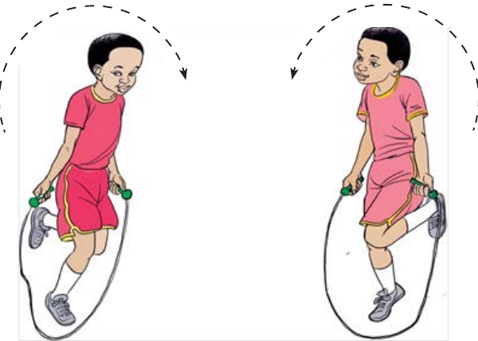

Kuruka kamba mtu mmojammoja
Kuruka kamba kwa mguu mmoja

Jinsi ya kuruka kamba kwa mguu mmoja
- 1. Shika mwanzo wa kamba kwa mkono mmoja.
- 2. Kisha mwisho wa kamba kwa mkono mwingine.
- 3. Irushe kamba juu kwenda mbele.
- 4. Kamba inapotua chini iruke bila kuikanyaga.
- 5. Anza kuruka kamba kwa mguu mmoja.
- 6. Endelea kuruka kamba kwa kuhesabu.
- 7. Ukiikanyaga kamba utamwachia mwenzio acheze.
- 8. Atakayeruka mara nyingi bila kukanyaga kamba ndiye mshindi.
Shughuli ya kufanya 13
Ruka kamba kwa mguu mmoja.